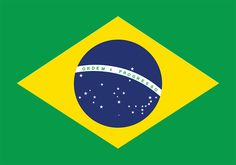
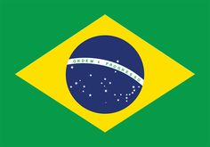

Languages:
 Português-Br
Languages:
 Português-Br

Volleyball has come a long way from the dusty-old YMCA gymnasium of Holyoke, Massachusetts, USA, where the visionary William G. Morgan invented the sport back in 1895. It has seen the start of two centuries and the dawn of a new millennium. Morgan's goal was to create a team sport without physical contact between opponents in order to minimize the risk of injury.
It was originally named Mintonette, but the name was changed to volleyball because of the game's object. Five years after its creation, the game was taken to Canada and later conquered other countries around the world.
It is currently most practiced in the following countries: USA, Russia, Brazil, China, Serbia
(Mainly in Russia)
Being the sixth most practiced sport in the world.
Brazilian Volleyball Confederation is the maximum entity of Volleyball and Beach Volleyball in Brazil. It is responsible for organizing national championships, such as the Superliga, and managing national teams. The entity is affiliated to the Brazilian Olympic Committee and the South American Volleyball Confederation.